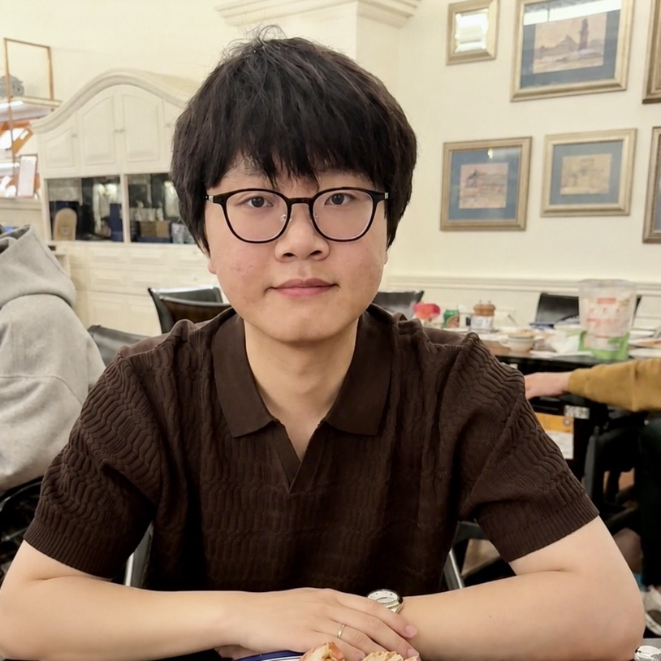

Investigating Memory in Model-Free RL with POPGym Arcade
* Equal Contribution
ICML 2026 (Spotlight)
I am a PhD student in Computer Science at the University of Macau, advised by Meng Qu. I received my MSc (Thesis) in Artificial Intelligence from the same university under the supervision of Steven D. Morad.
I often bring reflections from everyday life into my research. I enjoy thinking about how we think and learn, and this curiosity drew me to reinforcement learning.
My interests span streaming reinforcement learning, continual learning, and meta-learning. I study how agents learn from ongoing interaction and improve their ability to learn. My current work focuses on learning mechanisms in streaming RL and memory models for partially observable environments.

* Equal Contribution
ICML 2026 (Spotlight)